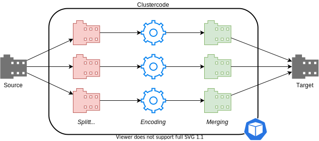

Clustercode - Kubernetes Movie and Series Operator
Introduction
Automatically convert your movies and TV shows from one file format to another using ffmpeg in a cluster. It’s like an ffmpeg operator.

Clustercode is written in Go and is an Open Source project.
| The tutorial gives you a glimpse into Clustercode. Give it a try! |
Documentation
The documentation is inspired by the Divio’s documentation structure:
- Tutorials
-
Learning-oriented: Simple lessons to learn about Clustercode.
- How-to guides
-
Problem-oriented: step-by-step guides to achieve a goal.
- Technical reference
-
Information-oriented: explaining the inner ongoings of Clustercode.
- Explanation
-
Understanding-oriented: puts Clustercode in context.